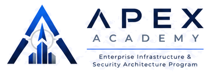

Pensar
Comprender, modelar, cuestionar y decidir con criterio antes de implementar.
Enterprise Infrastructure & Security Architecture Program
APEX Academy es una disciplina de trabajo para formar arquitectos capaces de pensar sistemas complejos, construir capacidades reutilizables, proteger la continuidad del negocio y compartir conocimiento de nivel empresarial.
Filosofía APEX
Cuatro verbos que definen la responsabilidad completa del arquitecto: comprender el problema, materializar soluciones, diseñar seguridad desde el inicio y convertir experiencia en conocimiento reutilizable.
Comprender, modelar, cuestionar y decidir con criterio antes de implementar.
Transformar conocimiento en laboratorios, documentos, herramientas y arquitecturas.
Integrar seguridad, resiliencia, continuidad, observabilidad y gobierno desde el diseño.
Crear artefactos que otros puedan usar sin depender del autor original.
Propósito
APEX no parte preguntando qué tecnología está de moda. Parte preguntando qué problema se busca resolver, qué riesgos existen, qué restricciones condicionan la decisión y cómo se operará la solución cuando llegue a producción.
El programa conecta infraestructura, redes, nube, virtualización, seguridad, continuidad operacional, automatización, observabilidad, gobierno y comunicación ejecutiva.
Método de aprendizaje
Leer no basta. Aprobar no basta. Cada módulo de APEX debe producir un artefacto que demuestre comprensión, arquitectura, operación y comunicación.
Comprender conceptos, principios y marcos.
Comparar alternativas, beneficios, riesgos y restricciones.
Probar en entornos controlados y seguros.
Crear HLD, LLD, ADR o patrón reutilizable.
Definir monitoreo, respaldo, recuperación y gobierno.
Preparar versión ejecutiva y técnica.
Defender la decisión ante un consejo de arquitectura.
Ruta de madurez
Aprender a pensar como arquitecto: fundamentos, sistemas, comunicación y método.
Construir capacidades técnicas sólidas en infraestructura, redes, cloud, seguridad y automatización.
Diseñar soluciones completas con HLD, LLD, ADR, riesgos, costos, operación y gobierno.
Conectar tecnología, negocio, estrategia, portafolio, capacidades y roadmap.
Definir patrones, frameworks, estándares y modelos reutilizables para organizaciones.
Enseñar, publicar, mentorizar y dejar conocimiento útil para nuevas generaciones.
Principios fundacionales
Los principios APEX convierten experiencia operativa en una forma consistente de decidir, liderar, documentar y enseñar.
Sprint 0
Esta etapa no busca enseñar una tecnología. Busca establecer la base documental, metodológica y operativa que hará posible APEX.
Documento fundacional, propósito, filosofía, niveles y reglas de calidad.
En revisiónRuta de 36 meses con módulos, proyectos, certificaciones y calendario.
PendienteManual inicial de pensamiento arquitectónico y comunicación ejecutiva.
PendienteMétodo con principios, fases, artefactos y mecanismos de revisión.
PendientePlano maestro del laboratorio base para aprendizaje seguro.
PendienteBitácora inicial
“Hoy no se creó un curso. Hoy nació una visión: una academia cuyo propósito no es formar personas que memoricen tecnología, sino arquitectos capaces de comprenderla, cuestionarla, diseñarla y compartirla.”

APEX Academy
El siguiente paso es publicar el roadmap, abrir el repositorio de artefactos y convertir cada módulo en una evidencia reutilizable.
Antes de publicar: reemplazar el correo de contacto por el dominio oficial de APEX Academy.